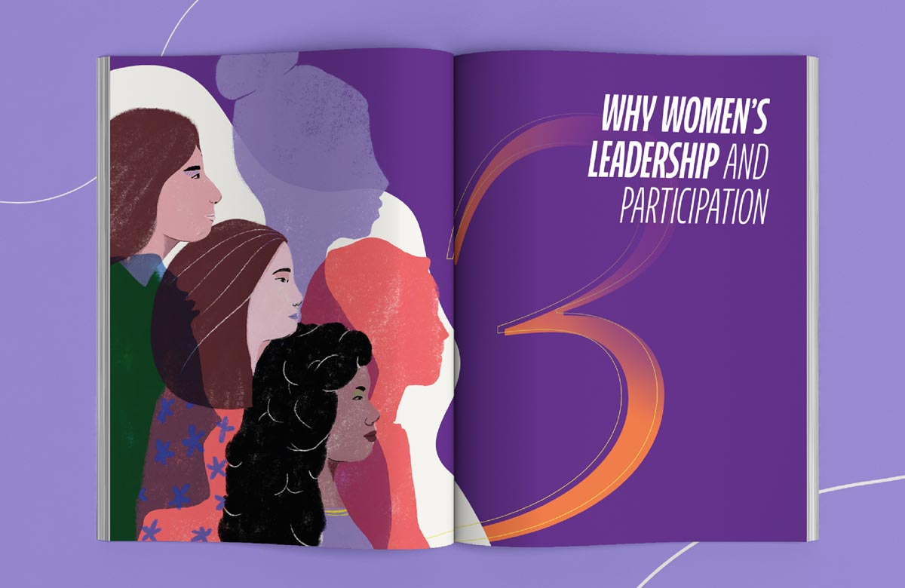
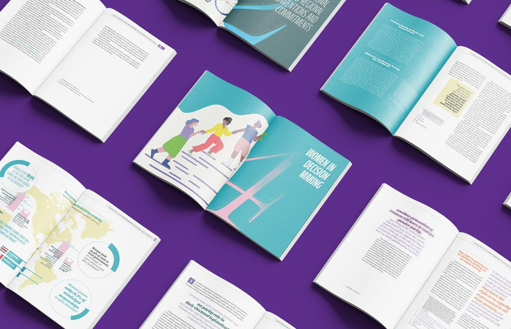
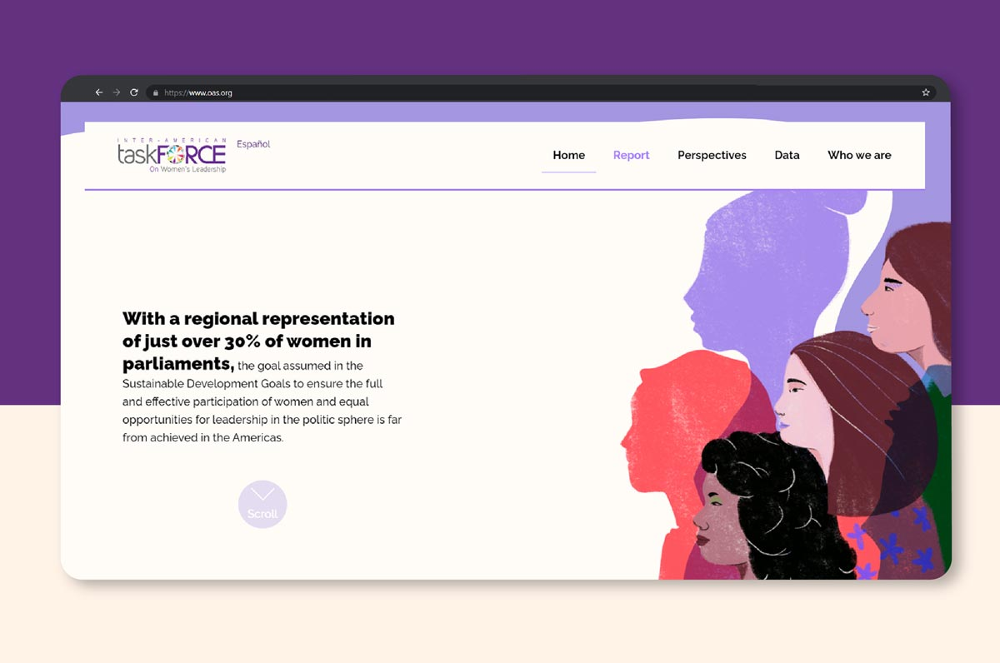
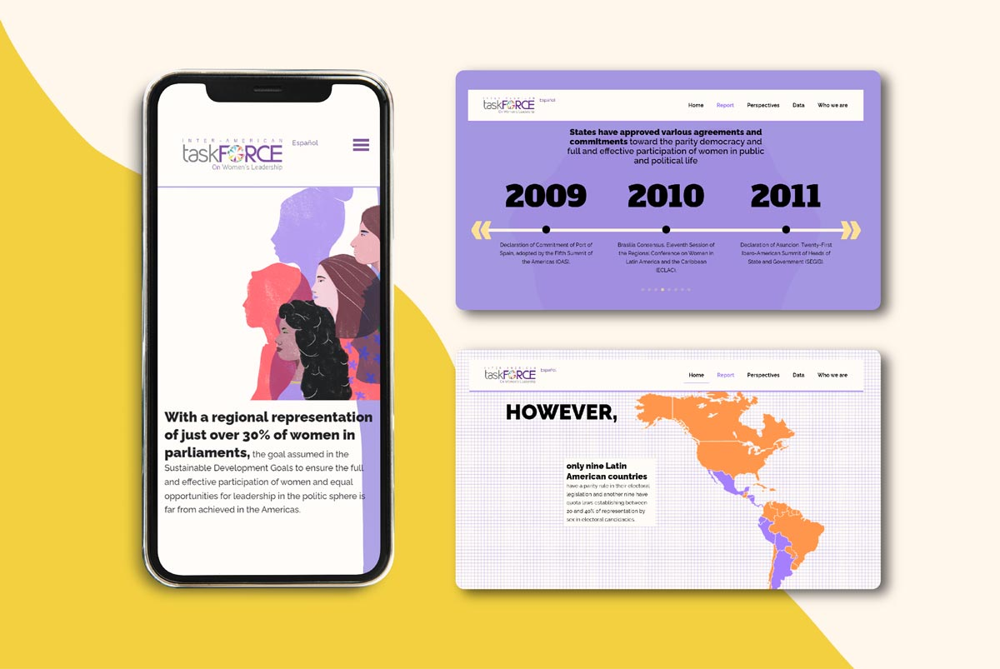
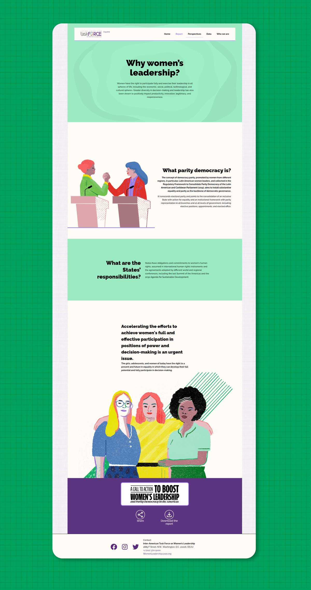
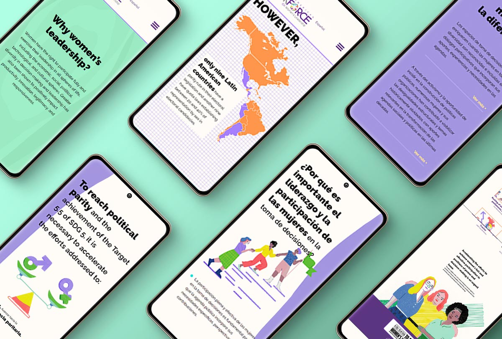
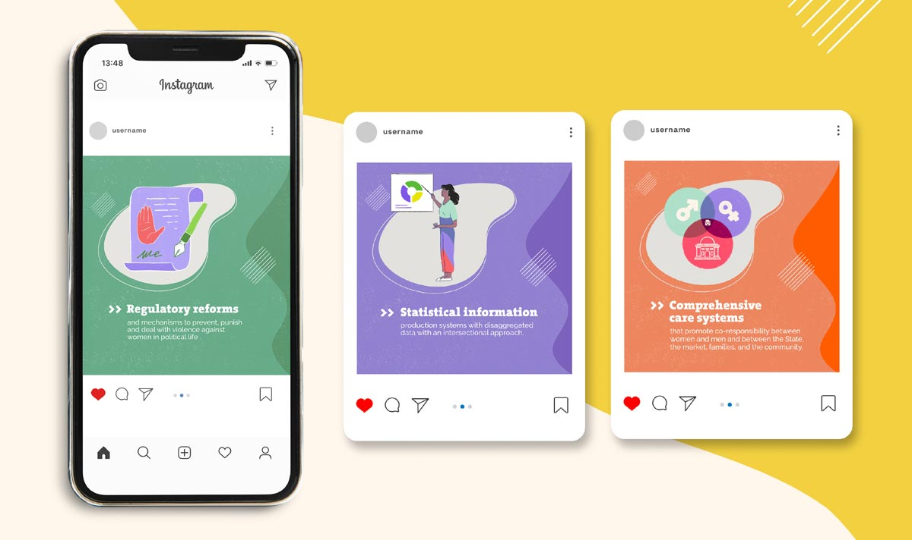
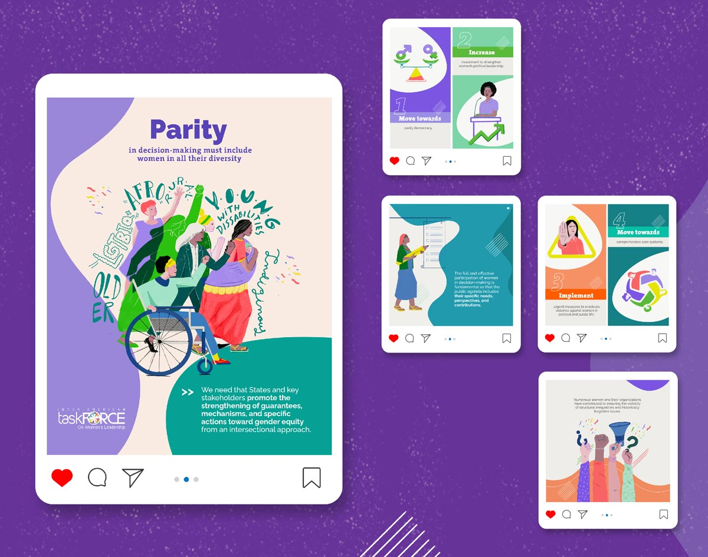

Without parity, there is not democracy
> System of communication products
Without parity, there is not democracy
       About the project
On the occasion of the IX Summit of the Americas in mid-2022, the Inter-American Task Force on Women's Leadership approached us to design and illustrate their report on gender parity in the region.
Following the Taskforce's visual guidelines, we created a unique and eye-catching report.
The layout was carefully designed to add dynamism while maintaining the organization's brand style.
Our illustrations aimed to represent the diverse women in the region, showcasing their bodies and empowering activities while acknowledging the challenges they still face.
To encourage public discussion, we developed a visual communication strategy, including social media posts and a microsite.
Given the organization's global reach, the project was developed in both Spanish and English.
Technical information
Client: Inter-American Task Force on Women's Leadership
Year: 2022
Delivered products: 1 report, 1 executive summary, 1 bilingual microsite, 1 content grid for social media.
Links: